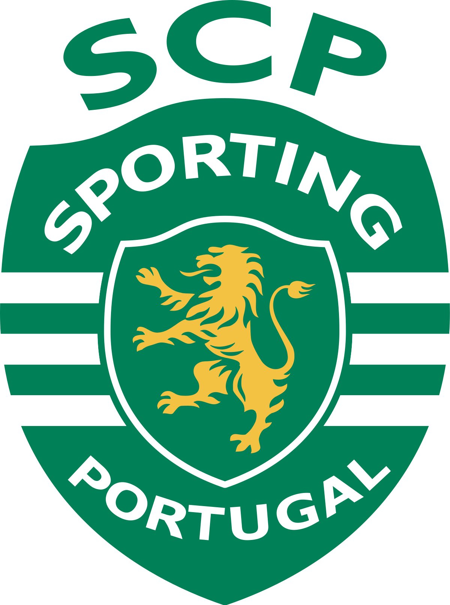

Adoro música, que me acompanhou durante toda a vida 🙂.
Estudei na Escola de Música da Póvoa de Varzim durante vários anos.
Toco guitarra e o meu estilo de música favorito é sem dúvida o Rock, do qual aprecio diversas variantes.
Levo os D'ZRT no coração <3
Já pratiquei inúmeros desportos, e bastantes distintos...
Bem, os mais importantes talvez tenham sido futebol, basketball e ténis, mas também cheguei a experimentar badminton, ping-pong e até mesmo Karaté (durante 1 semana, depois fui expulso porque não tinha muito jeito para a coisa).
Gosto de acompanhar futebol, uma vez que sou grande adepto do Sporting Clube de Portugal desde pequenino 😃!

Sou também grande fã de séries e filmes.
A minha série favorita é The Walking Dead, uma vez que foi a primeira que vi, e acompanho-a há vários anos <3.